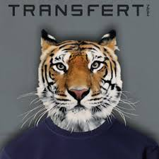
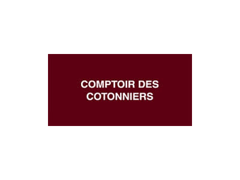

Les Antiquités Lecomte c'est grande gallerie de 4000m2 et un site internet proposant des meubles et objets Antiques datant du XVIIIe au XXe siècle. J'y travaille actuellement en tant que responsable de communication et marketing. J'ai pour missions de mettre en ligne des meubles restaurés, sur notre site internet. Mon ojectif principal : être la plus précise possible dans le descriptif de nos produits, mettre en valeur tout en représentant fidèlement l'état et l'aspect du meuble en photos (une soixantaine environ). J'ai également pour objectifs de gérer nos réseaux sociaux professionnels tels que Facebook, Instagram et Pinterest. Je les ai créés en novembre 2020, j'anime et je modère la communauté, en créant des publications notamment le meuble "favori du lundi", des quizz et anecdotes antiques ou encore en gérant les intérrogations et commandes de nos produits mis en vente via ces plateformes.
Zara, Malte
Je suis partie vivre 7 mois à Malte dans le but d'améliorer mon anglais. J'ai travaillé dans diverses entreprises. Zara fût l'expérience la plus formatrice que j'ai pu avoir sur l'île. En effet, j'ai bénéficié d'une totale immerssion dans un magasin comptant plus de 300 employés (maltais, espagnols, anglais, portugais ecetera). J'ai acquis du vocabulaire professionnel et personnel et appris à parler un anglais fluide.

Transfert, Nantes centre
Transfert est une boutique de vêtements multi-marques et haut de gamme pour homme. J'y ai réalisé mon BTS MUC en alternance, de 2017 à 2019. Je dois dire que les conditions de formation étaient remarquables. Je n'ai pas seulement appris à prendre en charge un client mais à lui faire vivre une expérience d'achat optimale et plaisante: j'ai appris à guider le client, à lui raconter une histoire à travers la marque, la qualité du lieu, les produits et tenues associées, je me suis accoutumée à délivrer des conseils toujours personnalisés pour chaque client dans le but de créer une relation pérenne et fidèle avec eux. Le commerce de luxe à amplifier mes compétences et ma rigueur, que ce soit dans ma présentation ou dans l'éxécution de mon travail.

Comptoir des Cotonniers, Beaulieu Nantes
Comptoir des Cotonniers à été l'un de mes premiers emplois. J'ai été formée sur les bases essentielles de la vente haut de gamme.